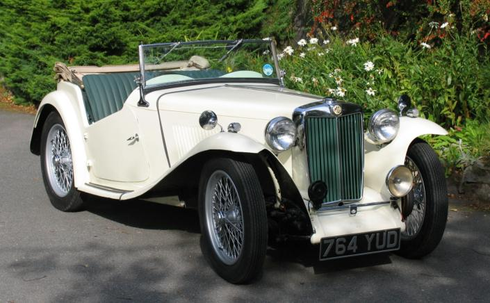
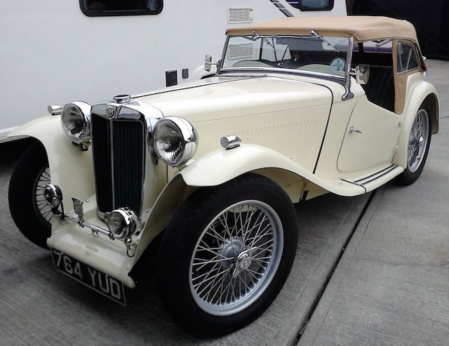
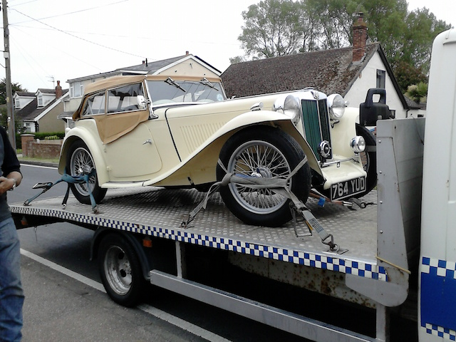

The History of a TC
Many people are interested in genealogy and trace their family members back into history. I’d quite like to do the same, but although the surname James may only be the 36th most popular in the UK (according to Geneanet), there are one and a quarter million of us; I even had a David James working for me on one occasion! Considering also that one of my grandfathers was a bus driver in North London and the other a store man in an engineering company (also in North London), I don’t have any real ‘hooks’ upon which to hang a family tree search.
Cars like my TC, however, are different. There may have been generations of models that led up to the development of the TC, but each individual car has a number of owners spread through time and place. In a previous article I said a little about the history of TC4985 and I’ve still many large blanks to fill in. However, from what I know already, the car has a more interesting history than me. And we were built/born in the same year.
When I bought TC4985, I only knew that it had spent most of its life in the USA, being brought back to the UK around 2010. The documentation only covered its time in the UK and so only included the then owner and the previous owner. According to the manufacturing records available through the T-Register, the car was built on March 10th 1948 and exported at some time to the USA. I can’t find any record of the car being registered in the UK at this time, so I assume that it was exported immediately after being built. TCs were never built in left-hand drive, but from December 1948 a specific export model was produced for the USA. Although 10,001 TCs were built between September 1945 and November 1949, only 494 were of the EXU variety (Sherrell, 2000, pp52-53). However, many non-export models, including TC4985, found their way across the Atlantic.
On the 21st July 2015, a month after buying the car, I updated the MGCC T-Register with details and a photo. The ‘keeper’ of the register (who happens to live in Brighton and owns a TA) replied with a reference to an entry in an early issue of the New England MG T Register magazine, The Sacred Octagon. That entry said that in 1973 a Ronald Durno of Trumbull, California had registered the car. The next day, the Registrar of the New England MG T Register told me that in 1973 the car was registered to Ronald A Durno of Trumbull, Connecticut (not California) and was later registered to George Mayfield, but they had no date or address. He was not active in the club after the early 1990s.

After a little research I found a postal address for a Ronald Arthur Durno, then 88 and formerly of Trumbull, Connecticut. So I wrote to Ron Durno on 24th July and received an e-mail from him on August 3rd, starting What a nice surprise.
It seems that he bought the car as a collection of bits, after the previous owner gave up on a restoration, and put it back together. According to the photographs he sent me the car was originally green with red upholstery! Although it looks from the photographs as though it had been taken back to bare metal during the restoration. (The T-Register record gave the colour as cream/red.) However, Ron saw another car painted cream and so decided to change the colour.


Unfortunately Ron has no records of his period of ownership of the car apart from a few photos of the pile of bits in his garage and of it in its green and cream paintwork. He had them scanned and sent them to me, but he can't remember the dates or to whom he sold the car and when. Although he did say that he regrets ever selling the car. However, it turned out that Ron is English, having been born in Bournemouth and emigrated to Wichita, Kansas in 1957 to work for the Cessna Aircraft Company. It also transpires that he is a radio control model aircraft enthusiast (another of my hobbies). Ron was also kind enough to send me two MG manuals from the time that he owned the car.
Then there is a big gap. TC4985 does not reappear until 2010 when a dealer in the UK bought it from a dealer in the US. Terry Bone, a dealer in pre-1956 MGs based in North Chailey, East Sussex (although in 2010 may have been based in Steyning, West Sussex) told me that he imported TC4985 from the US some time in 2010, buying it from Garth Posey. He then sold it to someone in Peacehaven, but he did not have the dates. As it happens, I had viewed two TCs that Terry had for sale before I bought TC4985. The description on his web site in 2010 stated:

This MG TC is an ideal restoration project being that the chassis (chassis number TC4985) is basically sound and has virtually all its major parts still attached to the chassis. The previous owner has informed me that the engine, although looking somewhat dirty has actually been extensively restored. Insofar as the body is concerned, the front and rear wings, petrol tank, bonnet and front apron are all in re-usable condition, the body tub however requires attention. It also appears that some of the chromework has been either rechromed or refurbished, including the radiator shell, head lights and sidelights. There is a good set of 19" wheels with the MG with some good tyres. The MG is being offered for sale without any identification papers (log book) but these will be available on completion of the restoration when the MG has a valid MOT.
Until 2011 Garth Posey of New Jersey was selling MG parts on The MG Experience forum web site. However, a number of posts around that time suggest that Garth was not considered to be a reputable dealer and he seems to have stopped advertising parts (at least under that name). His inbox on the site is also full and will not accept any new messages and so far I’ve not been able to track him down.
In August 2015 I spoke to the person from Peacehaven who bought the ‘restoration project’ from Terry Bone. At that time he was 78 and now lives in Seaford. He had made offers on two cars, TC4985 and an MGA, not expecting to get either. However, he suddenly found that he owned them both. He also told me that by the time he’d finished working on the car he’d put on some weight and could no longer get behind the wheel! So he sold both cars to The Real Car Company in Bethesda, Gwyneth in part exchange for a Rolls Royce. Subsequently he has lost weight and the week before I spoke to him he had bought a TA!
The Real Car Company advertised the car as follows:
Recent renovation work on this car by the previous owner has included various mechanical attention, many new items including stainless steel exhaust system, brake master cylinder, etc, etc, as well as cosmetic detail such as new, correct bonnet catches, door handles, etc. Nicely re-upholstered in green leather, using a correct specification re-trim kit. We are about to re-finish the wheels in silver, fit new tyres and tubes, and generally prepare the car. A good, clean, useable example, offered MoT tested.
They seem to have sold it in 2012 to another dealer in Kent from whom the previous owner bought it in May 2013. Thus it was that I saw this advert on the Octagon Car Club web site:
MG TC 1948. Chassis no. TC 4985. Finished in sequoia cream with new shires green leather upholstery. New tan double duck hood and side screens. Correct headlamps and fog light, new wiring loom fitted. Many other items replaced in order to make this a very attractive and much admired TC.
Since the owner was in Little Clacton in Essex I initially decided it was too far to go to view it. However, in June 2015 we arranged to have a day out in that direction and I viewed the car.
In addition to fitting a new wiring loom to the TC, the owner had it converted to negative earth. He had fitted flashing indicators in the side lights and rear indicator lights fixed to the luggage rack. He said that the car had a TD engine, although it is still an XPAG. However, the engine number indicates that it is, in fact, a TC engine from a car built in October 1948, only a little younger than the car. The owner had also removed a layer of under seal and then painted the chassis with dark green Hammerite.
After a test run, you’ve guessed it, I bought the car and so TC4985 moved to Sussex for the next phase in its 68 year history.
(Written 2nd August 2016; published in WSMGOC Main Gear, November 2016.)
© David James 2020 Last updated: 13th April 2020